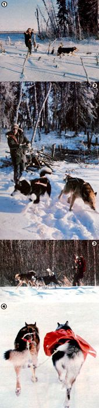

[1] Julie holds the new tow rope up away from her skis to keep the line taut as the dogs slow suddenly. [2] As she brings the team to a stop. Julie gathers in the line to prevent it from tangling. [3] Miki, laden with groceries, returns from a shopping trip. [4] Tok and Loki are fastened in a common hitch. Note how Loki's tugline is somewhat slack... he can't pull as hard with the extra weight of the pack.